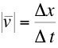
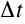
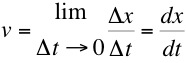

1D Motion, Constant
Acceleration

"Aristotle maintained that
women have fewer teeth than men; although he was twice
married, it never occured to
him to verify this statement by examining his wives' mouths"
Bertrand Russell

- In order to discuss motion in general we must first define velocity and acceleration and explain the difference between the average and instantaneous values of these quantities.
-
Average Velocity
, where
 is
the magnitude of the displacement of the particle. is zero, the
average velocity is zero.
is
the magnitude of the displacement of the particle. is zero, the
average velocity is zero.-
Instantanous Velocity
and  become smaller and smaller. The limiting
condition,  defines the instantaneous velocity at a particular location.
The instantanous velocity can also be described as the slope (or tangent) of the curve at a specific location and will in general be different at every point in the path.
Instantanous speed is the magnitude of the instantaneous velocity.
-
 Units of velocity - m/s (SI) or
ft/s (British)
Units of velocity - m/s (SI) or
ft/s (British)
- Average and Instantanous Acceleration can be defined in a similar way to average and instantanous velocity.
- Acceleration can
be positive or negative, negative acceleration is often
called deceleration
- Units of acceleration - m/s2 (SI) or ft/s2 (British)
- If average and instantaneous accelerations are zero, then the motion is contant velocity.
- Constant acceleration means instantaneous and average acceleration are equal. In this situation we can obtain a set of equations known as the...
- Kinematic
equations for one dimensional constant acceleration
motion
- vf = vi
+ at
- x = vi
t + at2 /2
- x = (vf 2
- vi 2 )/2a
- x = (vi
+
vf )t/2
- Vertical motion
under the influence of gravity (ignoring air resistance).
Galileo
determined that
"All
freely falling objects have the same acceleration at the
same place near the earth's surface"
The
value of this acceleration is 9.8 m/s2 (32 ft/s 2) directed
towards the centre of the earth.
Since the acceleration is constant, the kinematic
equations above may be applied, where a=-g, the v's represent velocities in the y
(vertical) direction and x becomes the distance in y (height).
It is said that in order to come to the above conclusion
Galileo performed a number of experiments by dropping pairs of
different objects off the Leaning Tower of Pisa. One
such pair were reputed to be a
feather and a stone. Of course the stone hits the ground
first. However, in the vacuum of the Moon this is not
the case, the stone and feather will hit the ground at the
same time. Apollo 15 astronauts
David Scott and Jim Irwin actually conducted this experiment
on the Moon, the results of which are documented on NASA's
Lunar
Feather Drop Home Page and here.
More recently Brian Cox demonstrates Galileo's statement in a
vacuum chamber as part of the BBC's Human
Universe TV series.
“
George Bernard Shaw

Dr. C. L. Davis
Physics Department
University of Louisville
email: c.l.davis@louisville.edu